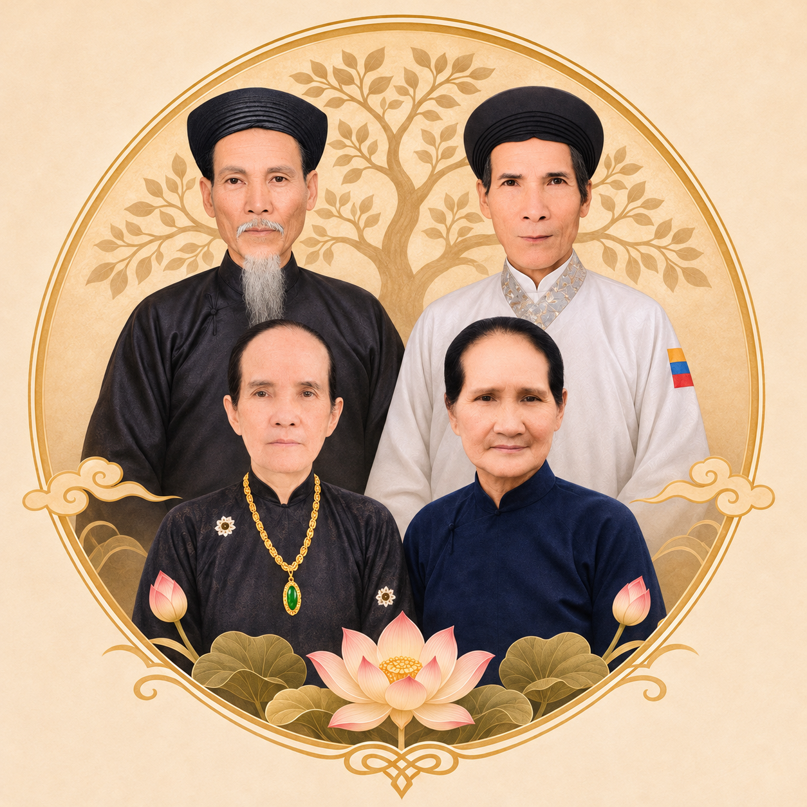

Trân trọng nguồn cội · Gìn giữ gia phong
GIA PHẢ
DÒNG HỌ HUỲNH
Từ đất Phước Thạnh, Gò Dầu, Tây Ninh — lần theo dấu xưa của tiền nhân, ghi lại thế thứ, công nghiệp và những câu chuyện đã làm nên cội rễ một dòng họ.
BẢN THẢO GIA PHẢ · TƯ LIỆU ĐANG ĐƯỢC ĐỐI CHIẾU

ẨM THỦY TƯ NGUYÊN · UỐNG NƯỚC NHỚ NGUỒNBa nẻo về nguồn
Cây phả hệ để nhận rõ tôn ti, phả ký để hiểu chuyện tiền nhân, tư liệu để lưu giữ dấu tích có thể khảo chứng.
Tưởng niệm · Kỷ niệm ngày mất
Nén hương lòng hướng về những người đã khuất, gìn giữ ngày giỗ và dấu tích gia phong.
Giữ lấy một mối dây nguồn cội
Gia phả chẳng những là chỗ chép tên tuổi người đã khuất, mà còn là lời nhắc cho con cháu biết mình từ đâu mà có, biết kính trên nhường dưới, nhớ công lao của tiền nhân. Những điều chưa rõ xin để ngỏ, đợi tài liệu chứng minh, chớ vì muốn đủ câu chuyện mà ghi thêm điều chưa chắc.
Cây gia phả
Đường nối thể hiện quan hệ cha mẹ – con cái theo hồ sơ đã nhập. Vợ chồng được đặt chung một khung như sơ đồ truyền thống.
Dùng Xem toàn cây để nhìn tổng thể, sau đó phóng to hoặc chọn từng nhánh để đọc tên.
Hồ sơ thành viên
Mỗi người một trang ghi chép, liên kết với cha mẹ, phối ngẫu, con cháu và tư liệu có liên quan.
Phả ký dòng họ
Những trang ghi chép về nguồn gốc, cuộc đời tiền nhân, công việc khai cơ, gia phong cùng chuyện xưa nơi quê nhà.
Thư khố tư liệu
Danh mục hình ảnh, văn bản, mộ chí, văn bằng, ghi chép và nguồn dẫn liên quan tới gia sử.
Tưởng niệm · Kỷ niệm ngày mất
Chơn dung, ngày mất và những trang tưởng niệm người thân đã khuất của dòng họ.
Thông tin bia mộ
Hình ảnh, nơi an táng, văn bia và nguồn tư liệu đối chiếu của tiền nhân.
Quản trị gia phả
Nhập từng hồ sơ, chọn cha mẹ để cây tự nối, biên soạn phả ký và lưu tư liệu khảo chứng.